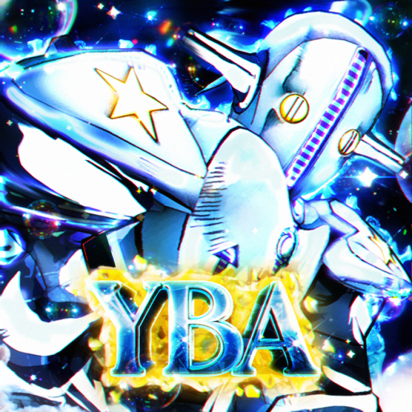
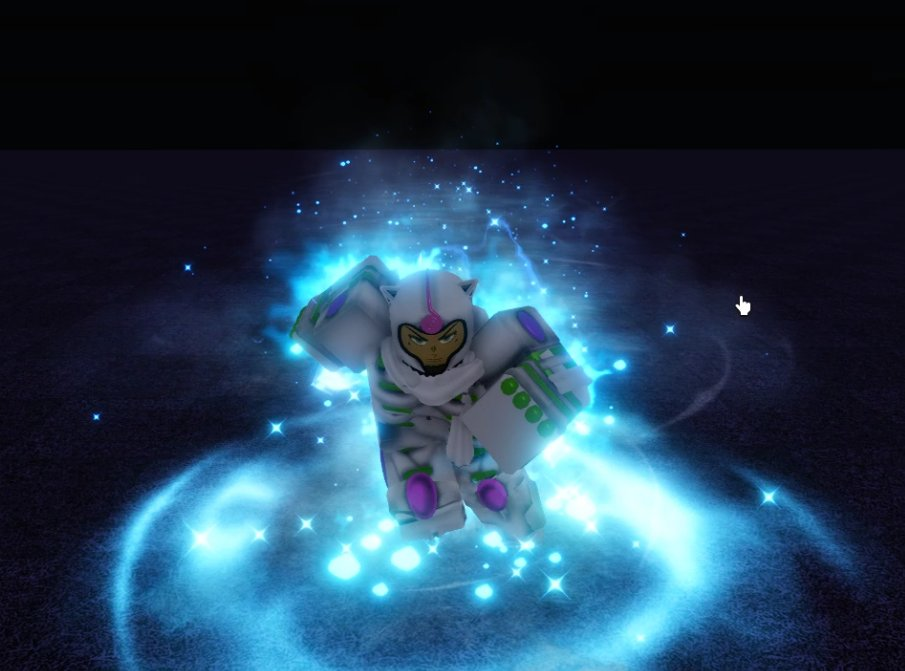
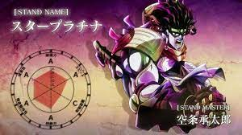
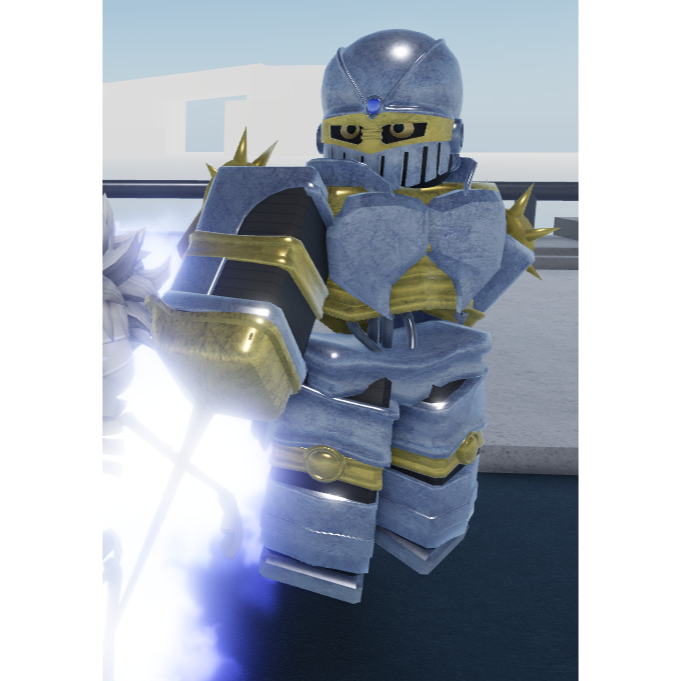
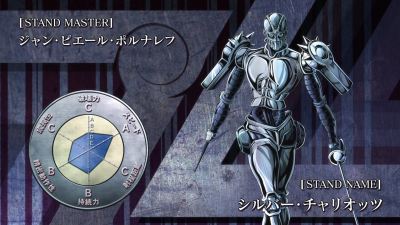
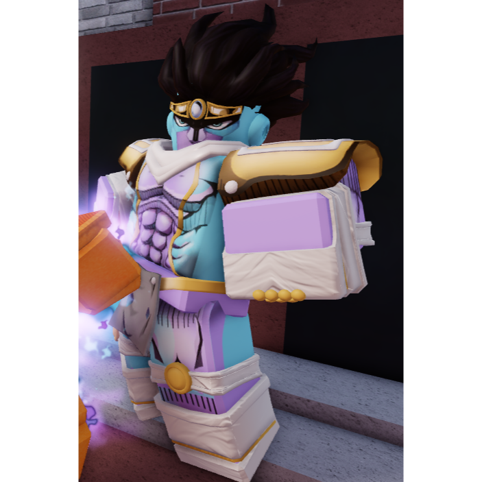
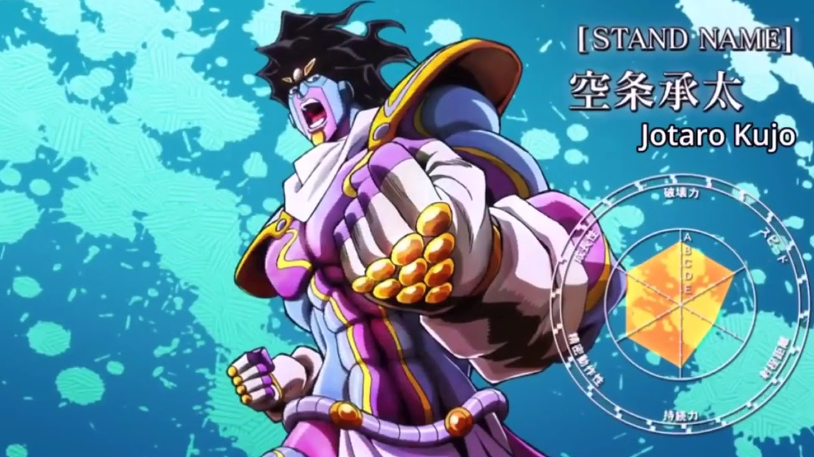

Top 5 Stands

White Album
Este stand permite al usuario tener una armadura y controlar la temperatura a su alrededor, ya sea a larga o a corta distancía este stand tienes varias habilidades las cuales son muy buenas para combear gente, hasta el punto en el que puedes hacer un combo one shot solo dependiendo de tu tipo o estilo de pelea su habilidad Gently Weeps permite crear particulas congeladas a su alrededor, practicamente este seria invencible contra proyectiles


SoftAndWet Go Beyond
Este stand como en el manga permite la creación de burbujas funcionales inexistentes que van fuera de la realidad despues de fusionarse con el Stand de Kira Yoshikague de la Parte 8 Killer Queen este potencia sus habilidades, ademas de poder colocar bombas en cualquier lugar que desee el usuario, este stand esta en este top por el simple hecho que sus combos no pueden ser detenidos, hasta que el usuario se quede sin habilidades por usar


Star Platinium No Requiem
Star Platnium No Requiem es un stand el cual requiere habilidad para usarlo y si la tienes considerate alguien muy bueno en pvp, ya que el daño que produce este es muy algo comparado a otros stands, sus habilidades se recargan tan rapido que este es capaz de generar un combo infinito combinado con el estilo de pelea de boxeo que sus habilidades igualmente se recargan rapido genera un daño infinito si aquel que lo usa tiene skill


Silver Chariot No Requiem
Al igual que Star Platnium No Requiem este requiere de gran habilidad para usarlo y produce un daño increiblemente alto tanto hasta el punto de poder derrotar a jefes como Dio Over Heaven en un instante, y sabemos que este posee el quintuple de vida que una persona normal y podiendose curar contantemente , este stand proporciona al usuario un guerrero con una armadura que al sacarla este obtiene mas velocidad, combinado a un estilo de pelea que lo mantenga en pie este stand puede ser el top 1 si no se requeriera mucha habilidad para usarlo


Star PLatnium Requiem
Esta version de Star Platinium es diferente a la que no obtiene el Requiem ya que en su forma requiem este obtiene mucho mas daño y la capacidad de parar el tiempo por 5 segundos, mucho mas tiempo que el Star Platnium No Requiem , las desventajas que este tiene es que su velocidad de ataque baja ligeramente comparada a la del No Requiem este no es apto para combos ya que este tumba al usuario al final de cada habilidad, pero se le añaden habilidades que pueden bajar tanto daño como si fuera toda la vida del jugador y por su habilidad de parar el tiempo este ya no necesita de habilidad ya que solo con parar el timpo puedes bajarle toda la vida al enemigo por que da tiempo de sobra para hacerlo

